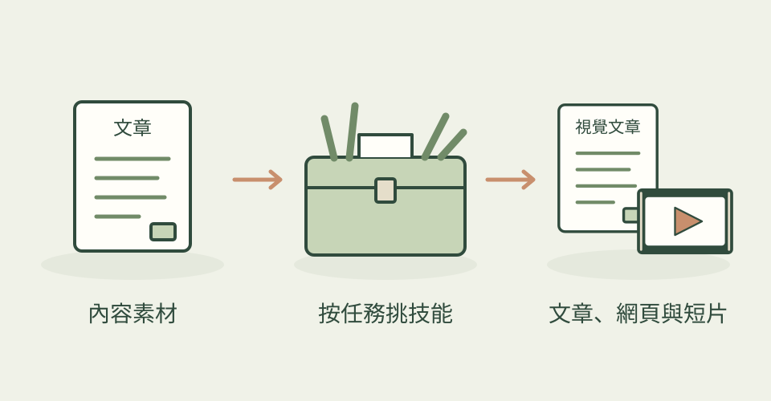

Garden Skills 以內容創作與設計為主軸，把不同任務拆成各自的技能。你可以從文章、視覺呈現或動態製作其中一條開始。
它怎麼幫忙
目前 README 列出 motion-showreel、web-video-presentation、web-design-engineer、gpt-image-2、beautiful-article 等項目。motion-showreel 用程式安排圖形、文字與介面動態，再逐格擷取成影片；現在也能按章節處理最長 20 分鐘的內容，保留完成章節，修改時只重建需要的部分。
功能快速理解

從內容出發，按任務選擇文章排版、網頁設計、生圖或動態技能。
功能示意・本站繪製 放大查看可以這樣開口
這是一個可依需求修改的委託範例。
把我提供的三分鐘展覽錄音做成三章圖形動畫。先確認風格，再逐章打開工作區預覽，調低背景音樂、裁短音效，讓我確認畫面與聲音後再匯出 MP4，保留可修改原始檔。
適合什麼工作
適合跨文章、網頁與動態素材工作的內容設計者。
開始之前
- 準備工具
- 依子技能準備生圖、瀏覽器或程式執行能力。motion-showreel 需要 Node 18+、ffmpeg／ffprobe、Playwright 與 Chromium；作者設定使用 sh 腳本，Windows 需相容的 shell。
- 使用成本
- agent 和所選外部服務各自計費。動態與內建音樂合成可在本機處理，使用自己的錄音不必呼叫 TTS；選 Gemini、MiniMax 等語音服務時需 API 設定並依服務計費。
- 交付內容
- 依子技能交付文章頁、設計圖、網頁或影片
- 先留意
- 合集的星數不能直接當作某個子技能的成品品質評分。主圖仍是作者的視覺文章示例，並非本次長片功能的實測畫面；長片速度與實際語音服務未經本站測試。
最近的觀察
2026-10-26：motion-showreel 新增預設剪輯工作區，完成場景後先預覽真實畫面與聲音，確認後再匯出 MP4。可逐格檢查，分別調整口播、配樂與音效音量，也能拖動、切分與裁剪配樂及音效，支援復原與保存。口播位置仍鎖定；已混成一軌的音訊不能拆回獨立聲音。多頁長片須逐章預覽，並非整片跨頁連播。另可按需提早觀看製作進度，匯出保留檢查紀錄；本機工作區本身沒有新增遠端帳號或生圖費用。
作者與來源
本文依作者公開說明整理，沒有實際執行這個專案。功能插圖由本站繪製，原作者範例另行標示；並非本站執行技能的測試結果。GitHub 星數為專案總量，觀察時間為 2026年10月26日 08:32（台北時間）。
與前次快照相比增加 33 星；這不是 GitHub Trending 排名。